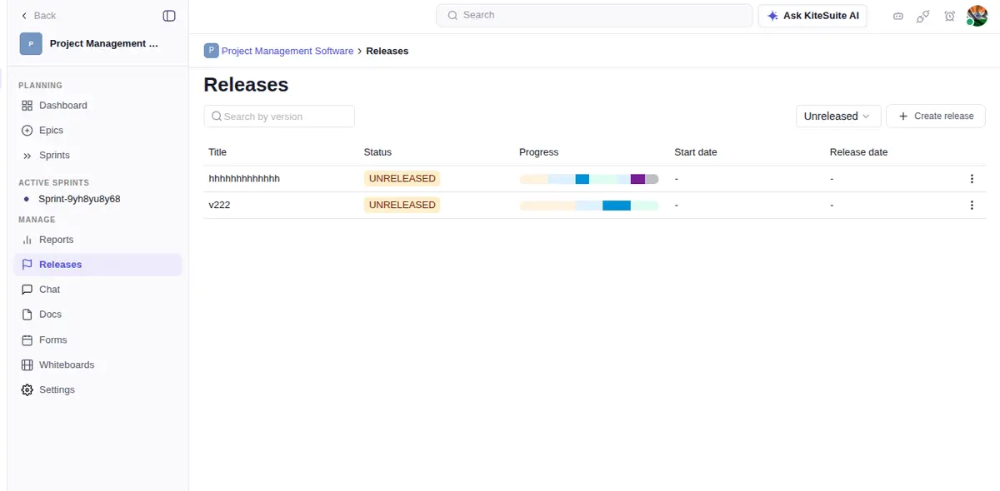
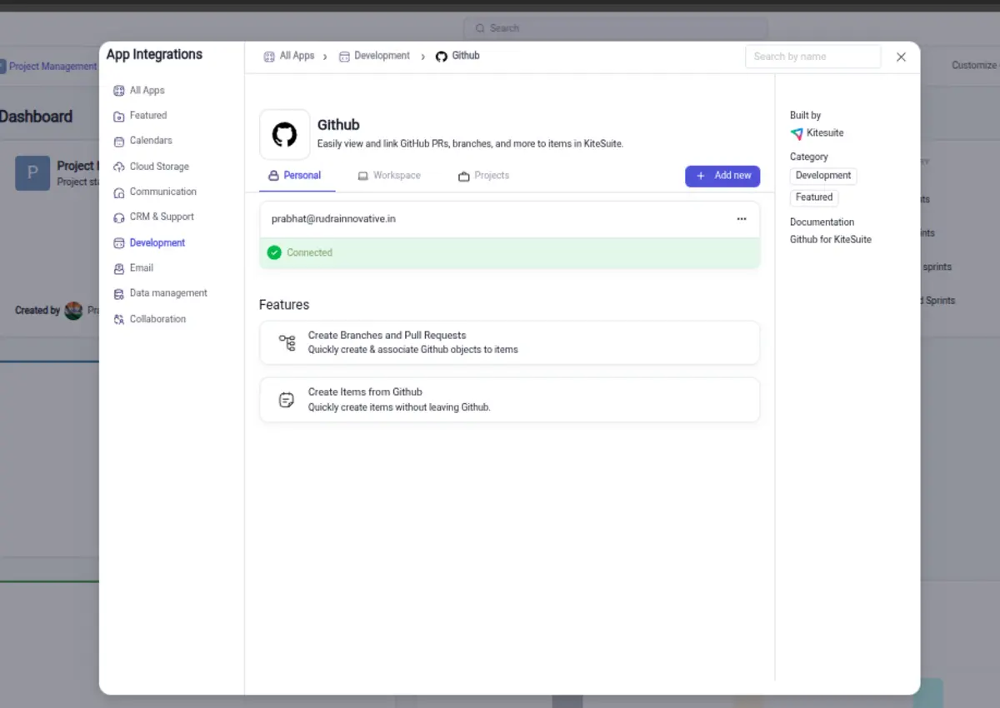
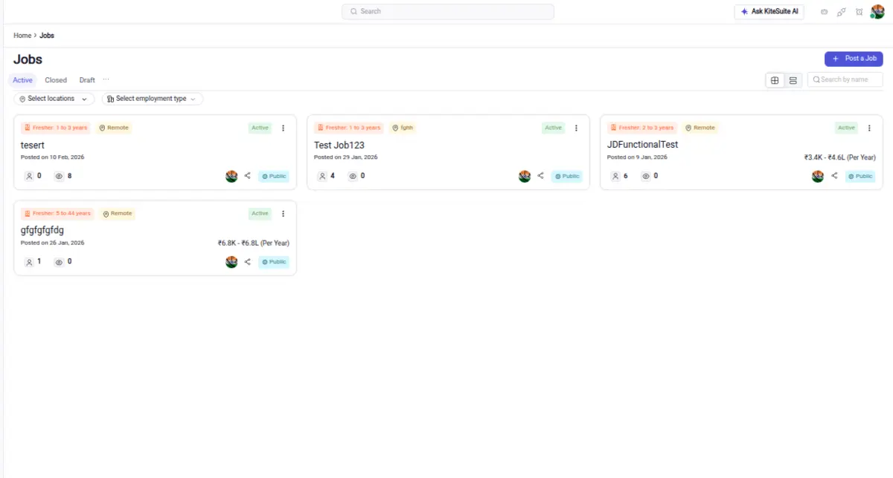
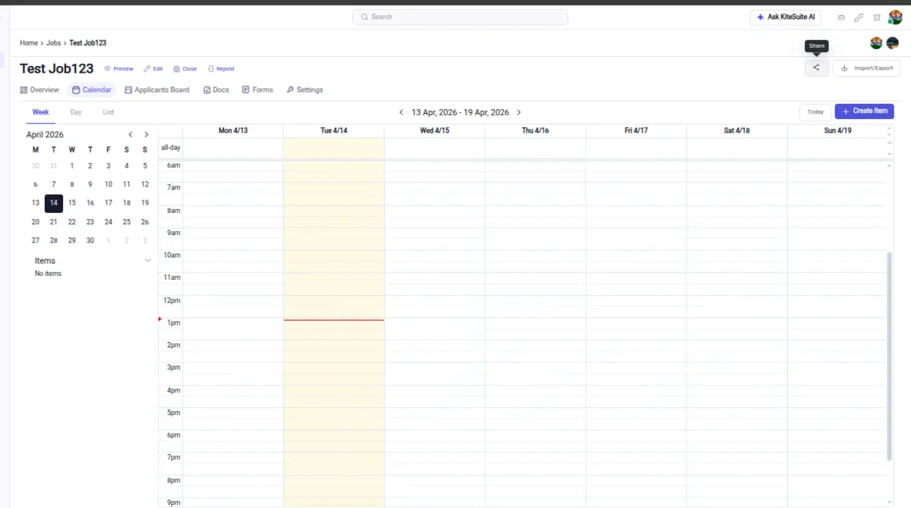
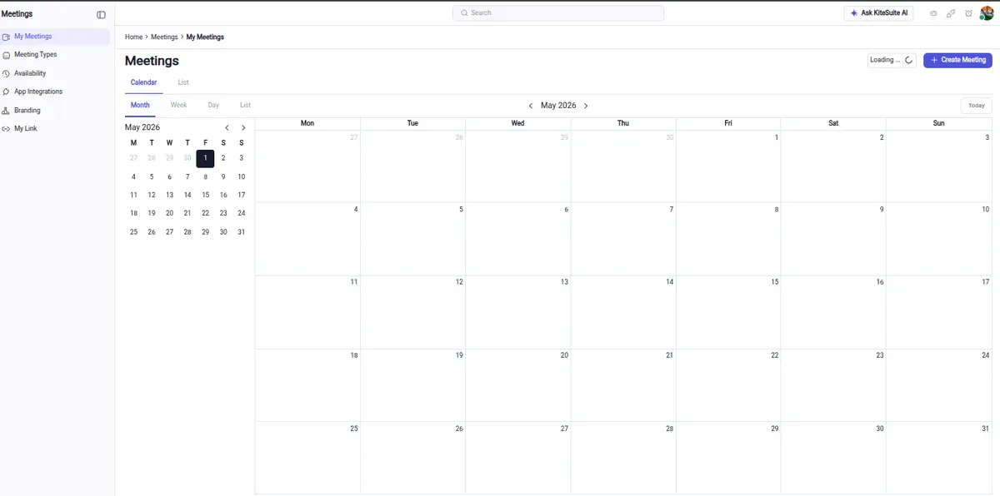
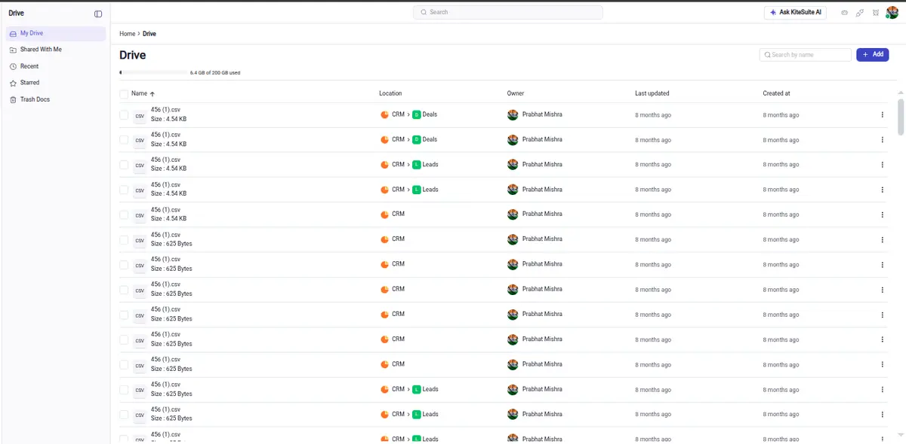
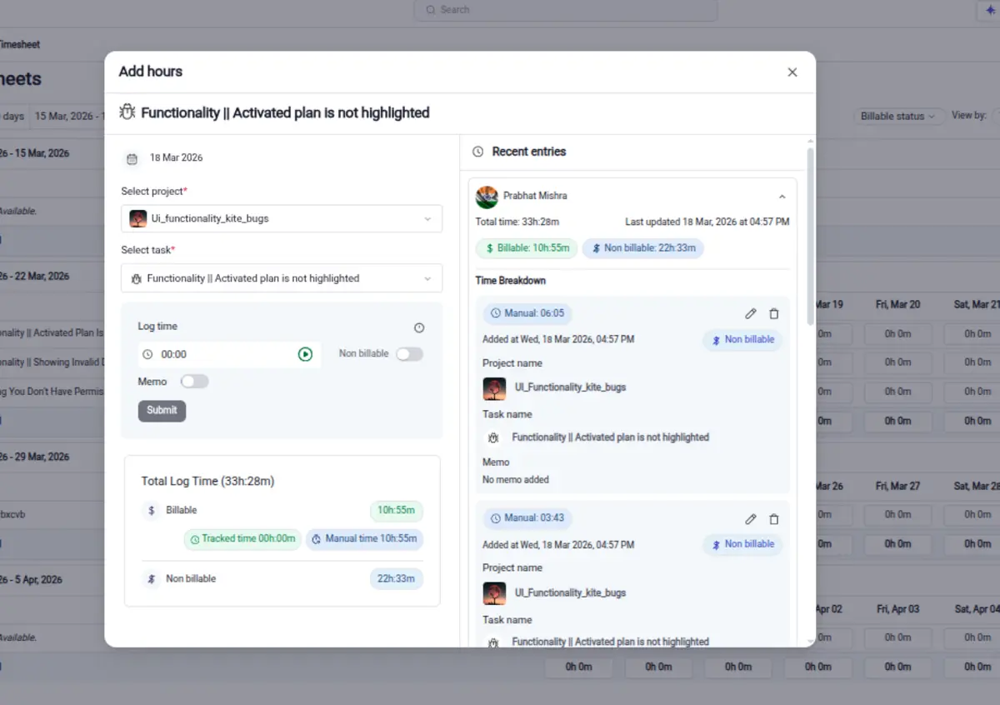

FULL-STACK + AI BUILD. CONNECT. INTELLIGENTLY.
Full-Stack Developer with 2+ years of experience shipping production SaaS applications end to end (Angular 17+, React, TypeScript, Node.js, Express.js, NestJS, MongoDB, and Groq/Llama GenAI). Led technical execution on KiteSuite and solo-engineered & launched AutoApply AI.
The 5 Core Dimensions.
Who I am, what I've done, where, what I can build, and how I deliver.
A transparent architectural dossier designed for engineering leaders, hiring managers, and clients seeking verified full-stack & GenAI capabilities.
Full-Stack Engineer & Practical GenAI Architect
Full-Stack Developer with 2+ years of production SaaS experience. B.Tech in Computer Science & Engineering from RTU (8.6 / 10 GPA). Specializing in reactive frontends (Angular 17+, React 18), robust backend microservices (Node.js, Express, NestJS), and failure-aware GenAI systems (Groq LPUs, RAG, semantic vector pipelines).
Enterprise SaaS Lead + Solo AI Founder
• KiteSuite (Enterprise): Led full-stack feature delivery on an enterprise multi-module SaaS (ATS recruitment, collaborative Docs, Sprint Kanban, calendar scheduling, and no-code AI automations) at Rudra Innovative Software. • AutoApply AI (Solo SaaS): Solo-founded, architected, and shipped an autonomous AI job application platform with Groq LPU inference, 15ms vector match, 9 production interfaces, and Stripe billing. • ZenduIt (IoT Fleet Tech): Engineered real-time GPS tracking APIs, driver safety scoring, and route optimization for commercial fleets at Sumedha SoftTech.
Rudra Innovative Software & Sumedha SoftTech
• Rudra Innovative Software (Mohali, Punjab · Aug 2025–Present): Junior MEAN Stack Developer — GenAI & AI Applications. Feature owner, code reviewer, and frontend technical lead on KiteSuite. • Sumedha SoftTech Pvt. Ltd. (Jaipur, Rajasthan · Apr 2024–Apr 2025): Software Developer delivering ZenduIt IoT fleet telematics. • Sumedha SoftTech Pvt. Ltd. (Jaipur, Rajasthan · Dec 2023–Apr 2024): Web Developer Intern. • Independent Solo Founder (2025–2026): Production architect & operator of AutoApply AI SaaS on Railway & Vercel.
Frontend × Backend × GenAI × Cloud Infrastructure
• Frontend: Angular 17+ (Signals, SSR Universal), React 18, TypeScript, RxJS streams, NgRx, SCSS glassmorphism, WCAG 2.1. • Backend: Node.js, Express.js, NestJS, RESTful APIs, WebSockets, Redis pub/sub, JWT, OAuth 2.0, Auth0. • GenAI & Agents: Groq LPUs (Llama 3.3 70B), RAG semantic retrieval, prompt engineering, structured JSON schemas, token economics. • Cloud & Data: MongoDB Atlas, Stripe billing, Twilio SMS, Resend, Railway, Vercel, Docker, GitHub Actions CI/CD.
Architecture-First, Schema-Governed & Failure-Aware
• Systems Thinking: Clean separation of concerns, reactive data flows, and atomic state synchronization across distributed surfaces. • Failure-Aware AI: Strict P95 latency budgets, fallback pipelines on LLM timeout, and schema validation so models never break production. • Team Leadership: Active daily code reviews, PR quality standards, mentoring junior engineers, and direct international client demos.
Cross-Border SaaS Infrastructure.
Multi-region deployment for AutoApply AI & KiteSuite.
Architecting for cross-border scale: AutoApply AI deployed across India and Europe with sub-25ms regional latency and 10-language internationalization; KiteSuite synchronizing enterprise workspaces across US, UK, and APAC timezones.
Synchronized UTC & Local Timezones
Handling cross-timezone calendar scheduling, meeting booking, and async workflows across team continents.
Native Internationalization (i18n)
Native 6-language instant localization without page refresh. Formatted numbers, dates, and localized telemetry.
AutoApply AI.
Autonomous Job Application & Career Intelligence SaaS.
Designed, architected, and shipped solo from front end to cloud infrastructure. An autonomous job-search platform empowering tech job seekers across India and Europe with sub-second AI matching, ghost-job credibility filtering, and 15ms ATS resume tailoring.
AutoApply AI — AI-Powered Job Application Automation SaaS
Designed and built an AI-powered job-search SaaS platform solo, end to end, for job seekers in India and Europe — including resume parsing, job discovery across multiple platforms, AI-explained match scoring, ghost-job detection, AI resume tailoring, auto-apply and instant job alerts.
Laser Resume Ingestion
PDF/DOCX documents parsed into normalized JSON schemas. 4 skill buckets extracted.
Groq LPU Match Analysis
Llama 3.3 70B computes explainable match confidence (0-100%) against live job descriptions.
Ghost-Job Shield
Heuristic filter screens out dead, reposted, or phantom listings before applying.
15ms Vector ATS Tailoring
Pure-JS pdf-lib generator tailors bullet points with 14mm/16mm ATS-verified margins.
Multi-Board Autopilot
1-click Easy Apply via Manifest V3 Chrome Extension across Naukri, LinkedIn & Indeed.
Alerts & Billing
Stripe webhook validation and instant status updates via Twilio SMS & Resend emails.
5 Core Engineering Pillars
⚡ Laser Resume Parsing & Groq Matchmaker
Ingests unstructured PDFs, normalizes 4 skill buckets (technical, tools, soft, languages), and computes explainable match percentages with missing skill gap reports using Groq LPUs (llama-3.3-70b-versatile & llama-3.1-8b-instant).
🛡️ Ghost-Job Credibility Shield
Algorithmic 0–100 heuristic scoring engine that analyzes posting age, reposting frequencies, recruiter responsiveness, and company domain trust to weed out expired, fake, and resume-harvesting postings before applying.
📄 15ms Vector ATS Resume Tailoring
Dual-Engine generation: Puppeteer Chromium for high-fidelity rendering + pure-JS 15ms vector pdf-lib. Dynamically adapts bullet points to keyword requirements with zero hallucination and strict 14mm/16mm ATS margins.
🚀 Multi-Portal Autopilot & Chrome Extension
Manifest V3 Chrome Extension copilot with 1-click Easy Apply automation for Naukri, LinkedIn, and Indeed. Features an in-page HUD, background tab throttling protection, anti-bot delays, and zero focus-stealing.
🌍 India → Europe Career Intelligence
Empowers global engineering mobility: purchasing power parity conversions from CTC (INR LPA) to EUR (€ gross/net), and automated German & EU Blue Card minimum wage threshold eligibility screening.
Live System Screenshots.
The actual SaaS platform in action.
Click any screenshot to inspect the high-resolution interface. All screenshots reflect real working code and deployed production systems.
KiteSuite.
Connected enterprise workspace platform.
Owned ongoing development and production delivery for KiteSuite at Rudra Innovative Software: a multi-module SaaS platform covering project management, documentation, forms, ATS, scheduling, CRM workflows, and no-code Natural Language Automation Builder.
KiteSuite is a connected SaaS workspace platform spanning projects, recruiting, documents, meetings, forms, time tracking and integrations. It is a live production system used across multiple interconnected modules, not a single-page demo.
Led day-to-day technical execution: assigning tasks, reviewing pull requests, mentoring junior developers and coordinating delivery; took part in architecture and technical design discussions and managed client communication on feature delivery.
Full-Stack Modules
Built and maintained full-stack features using Angular, React, TypeScript, Node.js, Express.js, NestJS and MongoDB, with NgRx/RxJS state management and WCAG accessibility.
GenAI & Automation
Designed and shipped AI chat assistant, smart document/task search, standup digests, risk detection, AI-estimated timelines, and a no-code Natural Language Automation Builder.
Ecosystem Integrations
Maintained enterprise integrations with ClickUp, Google OAuth 2.0, Auth0, and Stripe; engineered real-time WebSockets, Redis caching, and Swagger/OpenAPI documentation.
Delivery & Mentoring
Handled production deployments, live-issue troubleshooting, unit & integration tests; assigned tasks, reviewed PRs, and mentored junior developers.
Evidence,
not a screenshot wall.
A deliberate sequence through KiteSuite's product surface — each screenshot chosen for what it proves about the engineering behind it. Click any image to expand in high definition.

Shipping is a tracked workflow, not a hope.
Release planning and version tracking across a multi-module product. Proves comfort working inside structured production-delivery workflows, not just writing code in isolation.

Integrations surface
Third-party connectivity configuration — OAuth and webhook-driven integration work.

Recruiting / ATS workflow
A full applicant-tracking module inside a broader SaaS suite, not a bolt-on feature.

Project planning
Calendar-driven project scheduling, tied to the same data model as tasks and releases.

Meetings & collaboration
Scheduling and availability logic that has to stay consistent across time zones and teams.

File and document workflows at team scale.
Document listing and organization with permissions tied to workspace roles. Proves experience with content workflows, not just flat form fields.

Turning raw activity into readable signal.
Reporting surfaces built on aggregation across projects, time entries and workflow activity. Proves ability to write queries and transforms that turn operational data into product-level insight.

Time tracking
Time-series productivity data tied back into reporting and billing-adjacent workflows.
I think in
whole systems.
A generalized view of how the layers of a production SaaS platform connect — from reactive interface components down to distributed microservices, caching clusters, and zero-downtime deployment pipelines.
Client & Interface Layer
- ▸Angular 17+ & React 18: Component-based reactive interfaces with Signals and Angular Universal SSR.
- ▸State & Reactivity: NgRx, Redux, and RxJS observable streams managing complex cross-module state.
- ▸Design System: SCSS glassmorphism, responsive CSS grid, and WCAG accessibility standards.
API & Intelligence Layer
- ▸Node.js, Express & NestJS: RESTful APIs, Swagger/OpenAPI documentation, and modular route guards.
- ▸Real-Time & Security: WebSockets, JWT token security, role-based authorization (RBAC), and OAuth 2.0 (Google/Auth0).
- ▸GenAI & RAG: Groq LPUs, Llama 3 70B inference, semantic vector embeddings, and JSON schema outputs.
Storage, Events & Cloud
- ▸MongoDB Atlas & Redis: Document schemas, aggregation pipelines, compound indexing, and in-memory caching.
- ▸Integrations Hub: Stripe recurring subscriptions, Twilio SMS/WhatsApp, Resend transactional emails, and ClickUp APIs.
- ▸Cloud Delivery: Docker containerization, Railway, Vercel, and GitHub Actions automated CI/CD pipelines.
End-to-End System Layers.
From interface to bare metal.
Product surfaces
Interactive modules, reactive state, cross-module context preservation, WCAG accessibility.
Frontend
Angular 17+, React 18, TypeScript, RxJS streams, component architecture, SSR universal.
API layer
Node.js, Express, NestJS, RESTful APIs, rate-limiting, Swagger/OpenAPI documentation.
Auth & access
JWT tokens, OAuth 2.0 (Google), Auth0, role-based access control, session invalidation.
Data layer
MongoDB Atlas, Mongoose schemas, compound indexes, aggregation pipelines, Redis cache.
Integrations
ClickUp, Stripe billing, Google Workspace, Twilio SMS, Resend transactional emails.
Events & async work
WebSockets live sync, Redis pub/sub, cron schedulers, asynchronous queue workers.
AI layer
Groq LPU, Llama 3 70B, RAG semantic search, vector embeddings, structured JSON schemas.
Observability & validation
Live telemetry, error boundary logging, P95 latency tracking, uptime monitors.
Production & deployment
GitHub Actions CI/CD, Railway, Vercel, Docker containerization, zero-downtime deploys.
Full range,
not a logo wall.
Grouped by what each skill is actually for — not an unbroken list of names.
Languages & Core
Frontend Engineering
Backend & Distributed APIs
Databases & Caching
Generative AI & LLMs
Integrations & Cloud Platforms
Testing & Quality Assurance
Engineering Practices & Leadership
Practical AI.
Not AI theatre.
AI treated as a product/engineering capability with real constraints — not a badge on a résumé. Real production systems require strict latency budgets, token cost controls, JSON schema validation, and graceful error fallbacks.
Naïve API Call (Unsafe)
Directly passing raw user prompts to an LLM endpoint with no timeouts, no structured schema enforcement, and zero fallback handling. When the model rate-limits or returns unstructured markdown, the frontend crashes.
Failure-Aware Engineering (Production)
Groq LPUs delivering 180ms TTFT, strict JSON schema validation via Zod/TypeScript, token budgets, semantic cache hits, and deterministic fallbacks to rule-based algorithms if LLMs time out or degrade.
LLM integration
Wiring model/provider APIs into product workflows — prompt construction, response handling and integrating AI output into existing UI, not just calling an endpoint.
Embeddings & semantic search
Vector-based retrieval concepts for surfacing relevant content instead of relying on exact keyword matches.
Failure-aware AI
Designing for the case where the model is wrong, slow or unavailable — not just the happy path.
Verified Engineering Impact.
Measurable production outcomes.
Measurable engineering deliverables across enterprise SaaS platforms and distributed production workflows.
Both KiteSuite (developed by Rudra Innovative Software) and ZenduIt (developed by Sumedha SoftTech) are commercial enterprise products owned by their respective employers. Asendra contributed as a Full-Stack Developer and frontend technical lead engineering core modules, APIs, and AI integrations. AutoApply AI is Asendra's independent solo-founded product.
Where the Engineering Happened.
Production SaaS & distributed systems.
Verified professional employment history across enterprise SaaS products and high-throughput platforms.
Junior MEAN Stack Developer — GenAI & AI Applications · Rudra Innovative Software
Spearheaded full-stack feature engineering on KiteSuite (kitesuite.com), an enterprise multi-module productivity OS spanning Sprint/Kanban boards, ATS recruiting pipeline, collaborative Docs & Drive, calendar schedulers, and time tracking. Integrated practical GenAI workflows: conversational AI assistant, cross-module semantic search using vector embeddings & RAG, automated meeting-notes-to-task conversion, and risk detection. Developed the no-code Natural Language Automation Builder for workspace triggers using structured LLM schemas. Architected reactive frontend state using Angular 17+, TypeScript, RxJS, and NgRx with WCAG 2.1 accessibility. Engineered scalable RESTful APIs and WebSocket channels with Node.js, Express.js, NestJS, MongoDB, and Redis caching. Led daily code reviews, established PR standards, mentored junior engineers, and delivered technical demos for international clients.
Software Developer · Sumedha SoftTech Pvt. Ltd.
Developed core modules for ZenduIt, a high-scale fleet management and IoT telematics platform handling data from thousands of active commercial vehicles. Engineered real-time GPS tracking interfaces, automated route optimization algorithms, driver safety scoring engines, and geofence alert dispatchers. Built performant REST APIs with Node.js, Express, and MongoDB; engineered aggregation pipelines for fuel consumption and idle-time analytics handling 10k+ daily vehicle payloads at 99.9% uptime. Integrated JWT & OAuth 2.0 authentication with role-based access control (RBAC); conducted extensive API testing using Postman.
Web Developer Intern · Sumedha SoftTech Pvt. Ltd.
Developed responsive UI components and single-page applications using JavaScript, Angular, HTML5, and CSS3. Built backend REST endpoints and database schemas with Express.js and MongoDB. Performed unit testing, Postman API verification, and bug resolution across production staging environments.
Rigorous Engineering Core.
Computer Science & Systems Architecture.
A strong theoretical and practical computer science foundation from an RTU-affiliated engineering institution.
Verified Resume.
Interactive document preview & verified download.
Explore my complete curriculum vitae covering 2+ years of production full-stack SaaS engineering (MEAN/MERN, TypeScript, Next.js, and GenAI), architectural leadership at Rudra Innovative (KiteSuite), and solo-engineered SaaS products (AutoApply AI).
I engineer systems
that scale and endure.
Full-Stack SaaS Developer & Autonomous AI Architect
Full-Stack Developer with 2+ years of experience building and shipping production SaaS applications end to end, using Angular 17+, React, TypeScript, Node.js, Express.js, NestJS and MongoDB. Experienced with state management (NgRx, Redux, RxJS), RESTful API design, authentication (JWT, OAuth 2.0, Auth0), unit and integration testing, and Agile/Scrum delivery. Have led day-to-day technical execution, mentored junior developers, managed client communication, and independently designed, built and deployed a complete AI-powered SaaS product (AutoApply AI) solo, from front end to cloud infrastructure.
B.Tech CSE · Sri Balaji College (RTU)
Sri Balaji College of Engineering & Technology, Jaipur (Affiliated to RTU) · GPA: 8.6 / 10 · Class of 2024
SaaS Product × Practical GenAI
Transforming complex business logic into high-performing interfaces, resilient microservices, and failure-aware AI pipelines.
Mohali / Jaipur, India · Open to Global
Comfortable working across distributed global engineering teams in US, European, and APAC timezones.
Let's build
something exceptional.
Based in Mohali, Punjab, India (with roots in Jaipur). Available for full-time engineering roles, product collaborations, and distributed high-scale SaaS architectures.